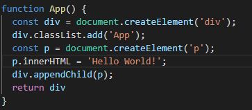
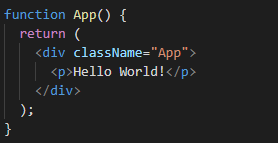
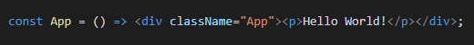
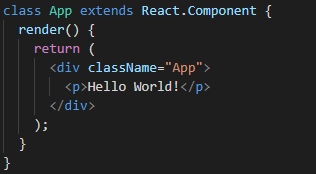
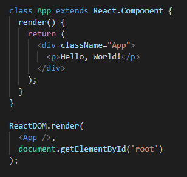
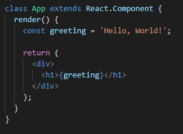
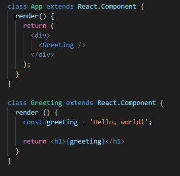
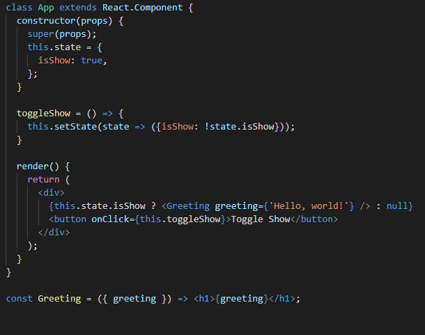

React
React is a JavaScript Library for Building User Interfaces
Why do we use React?
- Declarative & Composable
- One-Way Data Flow
- JSX
- Virtual DOM
- It's much easier to create mobile apps
Who Uses React?
- GitHub
- Codecademy
- Netflix
- PayPal
JSX
JSX is a combination of Javascript and XML code
Syntax
JavaScript
JSX
Virtual Document Object Model
What is the Virtual DOM?
The virtual DOM is a programming concept where an ideal, or “virtual”, representation of a UI is kept in memory and synced with the “real” DOM by a library such as ReactDOM.
Shadow DOM !== Virtual DOM
The Shadow DOM is a browser technology designed primarily for scoping variables and CSS in web components. The virtual DOM is a concept implemented by libraries in JavaScript on top of browser APIs.
Two basic steps to re-render
Reconciliation - The algorithm which React uses to diff one tree with another to determine which parts need to be changed.
Update - A change in the data used to render a React app. Usually the result of `setState()`. It's eventually results in a re-render.
Result
The Virtual DOM will only update what is necessary.

Components
React components are small, reusable pieces of code that return a React element to be rendered to the page. The simplest version of React component is a plain JavaScript function that returns a React element:
Components
Components can also be ES6 classes or arrow functions
ES6 arrow function:
ES6 class:
Components
Components can be broken down into distinct pieces of functionality and used within other components. Components can return other components, arrays, strings and numbers. A good rule of thumb is that if a part of your UI is used several times or is complex enough on its own it is a good candidate to be a reusable component.
Components life cycle
- componentDidMount()
- componentDidUpdate()
- componentWillUnmount()
ReactDOM.render()
ReactDOM.render creates the component, starts the framework, and injects HTML into a DOM node.
State and Props
Props
Normally you start out with React’s JSX syntax for rendering something to the browser when learning about React.
Props
Pretty soon you will split out your first React component.
State
A component needs state when some data associated with it changes over time. For example, a Checkbox component might need isChecked in its state, and a NewsFeed component might want to keep track of fetchedPosts in its state.
For each particular piece of changing data, there should be just one component that “owns” it in its state. Don’t try to synchronize states of two different components. Instead, lift it up to their closest shared ancestor, and pass it down as props to both of them.
State
In this case, the code uses a ternary operator to either show the greeting or not.
